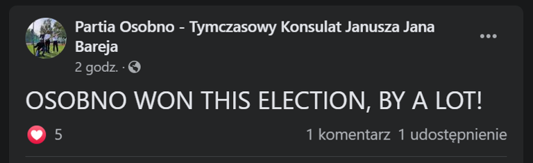

Zaskakująca sytuacja miała miejsce 12 grudnia 2020 podczas Wieczoru Wyborczego w Czackim. O tym wydarzeniu można przeczytać
TUTAJ. Konsul Liceum im. Tadeusza Czackiego w roku szkolnym 2019/2020, Dominik Mieszkowski, o
godzinie 23:00 przedstawił wyniki głosowania, zgodnie z którymi komitet KONSOLE2020 pod przewodnictwem Oli Czajki oraz Oli Wardy odniósł zwycięstwo,
zdobywając 46,1% głosów. Jak się jednak okazuje, rzeczywiste wyniki wyborów są zupełnie inne.
Na swojej stronie na facebooku, Partia Osobno, czyli komitet deklarujący się jako “tymczasowy konsulat Janusza Jana Bareja” opublikował niezbite
dowody na to, że to właśnie on zwyciężył tegoroczne wybory.

“OSOBNO WON THIS ELECTION, BY A LOT!” - napisała partia w języku angielskim, chcąc prawdopodobnie zbliżyć się do swoich zagranicznych wyborców
z całego świata. Druzgocące argumenty komitetu postawiły sprawę jasno - wybory w Czackim zostały sfałszowane, a jedynym praworządnym konsulatem
jest partia Osobno.
O komentarz do tych sensacyjnych doniesień poprosiliśmy konsula sprawującego władzę w roku szkolnym 2019/2020, Dominika Mieszkowskiego. “Istotnie,
zaszła haniebna pomyłka” - poinformował nas Dominik. “Obawiam się, że otrzymałem złą kopertę z wynikami. Robimy wszystko, co jest w naszej mocy,
by naprawić ten błąd”.
Ta szokująca sytuacja bardzo przypomina 89. ceremonię wręczenia Oscarów z 2017 roku, kiedy to wskutek błędu ogłoszono niewłaściwego zwycięzcę w
kategorii ‘Najlepszy film”. Analogicznie do sytuacji która miała miejsce podczas czackiego Wieczoru Wyborczego, prowadzącym galę Warrenowi Beatty’emu
oraz Faye Dunaway wręczona została koperta z niewłaściwym wynikiem. “Myślę, że mamy tu do czynienia z większym spiskiem” - stwierdził w rozmowie z
Czacki News Jimmy Christian Kimmel, amerykański prowadzący talk-show Jimmy Kimmel Live! nadawanego przez stację NBC, który poprowadził osławioną galę
sprzed trzech lat. “Takie wydarzenia nie powinny mieć miejsca. Mam nadzieję, że cała sprawa będzie miała swój happy-end i partia Osobno przejmie władzę
w Czackim, bo to się im należy. To się im po prostu należy”.
To jest Czacki News po godzinach. Przedstawiony artykuł został stworzony tylko i wyłącznie w celach humorystycznych, a przytoczone w jego
treści wypowiedzi oraz informacje nie są prawdziwe. O rzeczywistych wynikach wyborów na konsulat w Liceum im. Tadeusza Czackiego przeczytasz
TUTAJ.